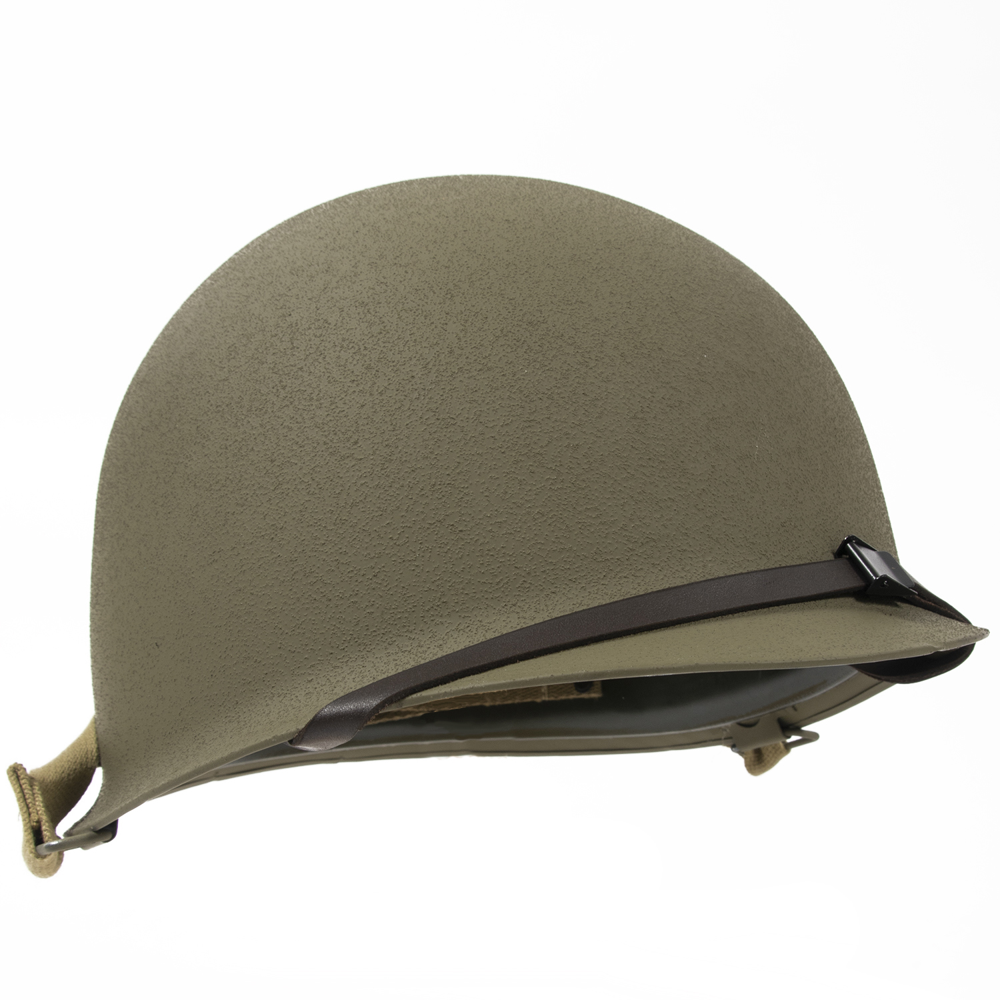
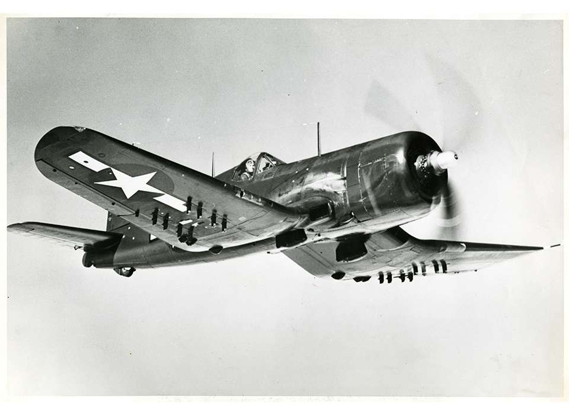
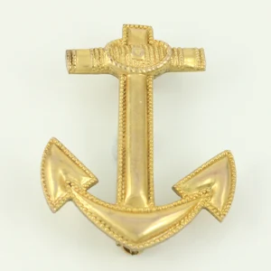

Nomenclature
The terms used in the game (e.g. regiment, brigade) have historically had different meanings in
the militaries of different countries. This section explains the significance of these terms as
they are defined for this game.
Division
Armies are composed of divisions, which is the smallest unit a player can directly control.
Battalion
Each division consists of 1-25 battalions - also sometimes called line battalions. This is the
main fighting force, and the primary source of most statistics. The primary drain of manpower
and equipment.
Battalion group and regiment
All battalions belong to a specific classification or group, such as "Infantry Battalion",
"Mobile Battalion" and "Armoured Battalion".
Regiments are the "columns" in the template designer. Battalions from different groups must be
in different regiments (columns). There is no other effect of regiments. And, as there are 5
regiments/columns but only 3 groups, it is never an issue. There are many other reasons not to
use all 25 battalion slots and/or mix more than 1-2 battalion Groups anyway.
Support company
In addition to the battalions, a division may have up to 5 support companies. These often provide
bonuses that cannot be otherwise obtained. Support companies can be roughly put into 4
unofficial groups:
- Artillery, which provides limited artillery tree capabilities for divisions that cannot
afford to bring mainline artillery battalions along.
- Basic support, which only needs support equipment
- Motorized support, which needs support Equipment and some motorized
- Recon, which can be cavalry (infantry weapons, support), motorized (infantry weapons,
support, and motorized), armoured car, or light tank
read more

Small Airframe
| Primary Weapon Slot |
Role |
| Naval Bomber Weapons |
Naval Bomber |
| CAS Weapons |
CAS |
| Fighter Weapons |
Fighter |
Medium Airframe
| Primary Weapon Slot |
Role |
| Tactical Bomber Weapons |
Tactical Bomber |
| Recon Equipment |
Scout |
| Fighter Weapons |
Heavy Fighter |
Large Airframe
| Primary Weapon Slot |
Role |
| Naval Bomber Weapons |
Naval Patrol Bomber |
| Strategic Bomber Weapons |
Strategic Bomber |
read more

Capital ships
Super heavy battleship As the main surface combatants, capital ships are designed to sink enemy ships in surface battles.
- Super heavy battleship (SHBB): SHBBs are particularly powerful and heavily-armored battleships, based upon a dedicated SHBB hull. Unlike other hulls which receive new iterations over the years, there is only one SHBB hull in the tech tree. SHBBs are powerful enough to remain a potent threat throughout the game despite the lack of hull iterations. However, they are also prohibitively expensive and take a very long time to build.
- Battleship (BB): With their heavy armor, battleships are capable of surviving substantial amounts of incoming fire from the enemy battle line. They can also deal considerable damage of their own. Battleships are expensive and take some time to build.
- Battlecruiser (BC): Battlecruisers share the same hull as battleships, but are distinguished by somewhat lighter armor and a lower construction cost. Although they can withstand less damage than a battleship, their lighter weight also makes them faster and harder to hit.
- Heavy cruiser (CA): Heavy cruisers share the same hull as light cruisers, and are distinguished by their heavier guns. With the lightest armor of any capital ship, heavy cruisers have low survivability against battlecruisers and battleships.
- Carrier (CV): Carriers are expensive to build, and are populated by specialised aircraft which must be built separately as well. The combined fuel cost of a carrier and its air wings can be considerable. Once these hurdles have been surmounted, carrier air wings can vie for control of the air and deal bomb damage to enemy ships during naval battle. Outside of naval battle, carriers may also be used as mobile air bases.
read more